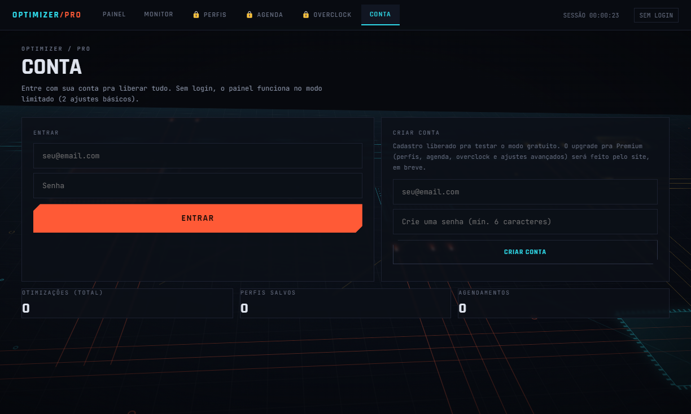

Seu PC não tá
rodando no limite.
Plano de energia oculto do Windows, GPU Scheduling, prioridade de processos, limpeza de sistema e troca de perfil de overclock — tudo com um clique. Monitor completo de CPU, GPU, RAM, disco e rede embutido.

Energia & sistema
Ativa o plano "Ultimate Performance" oculto do Windows, prioriza jogos no agendador multimídia (MMCSS) e ajusta prioridade de processos em primeiro plano.
GPU & rede
Hardware-accelerated GPU Scheduling (HAGS), desativa Game DVR do Xbox Game Bar, flush de DNS e desativa o algoritmo de Nagle pra reduzir latência online.
Monitor completo
Temperatura, uso, VRAM, clocks, consumo e fan da GPU; uso, clock e temperatura da CPU; RAM, disco e rede em tempo real — sem precisar abrir outro programa.
Perfis por jogo
Salve a combinação de ajustes (e o perfil de overclock) que funciona pra cada jogo e aplique tudo com um clique antes de abrir.
Agendamento automático
Defina horários pra otimização rodar sozinha — todo dia, em dias úteis, ou no intervalo que você escolher.
Overclock assistido
Troca entre perfis 1–5 já configurados por você no MSI Afterburner. Nenhum valor de clock ou voltagem é escrito por fora — sua placa, suas regras.


| Ajuste | Plano |
|---|---|
| Plano de energia Ultimate Performance | GRÁTIS |
| Limpeza de temporários | GRÁTIS |
| Limpeza de Prefetch | PREMIUM |
| Flush de DNS + rede | PREMIUM |
| Fechar processos em 2º plano | PREMIUM |
| Desativar Game DVR | PREMIUM |
| GPU Scheduling (HAGS) + MMCSS | PREMIUM |
| Nagle desativado (latência online) | PREMIUM |
| Perfis por jogo + agendamento | PREMIUM |
| Overclock assistido | PREMIUM |
| Monitor completo (CPU/GPU/RAM/disco/rede) | GRÁTIS |